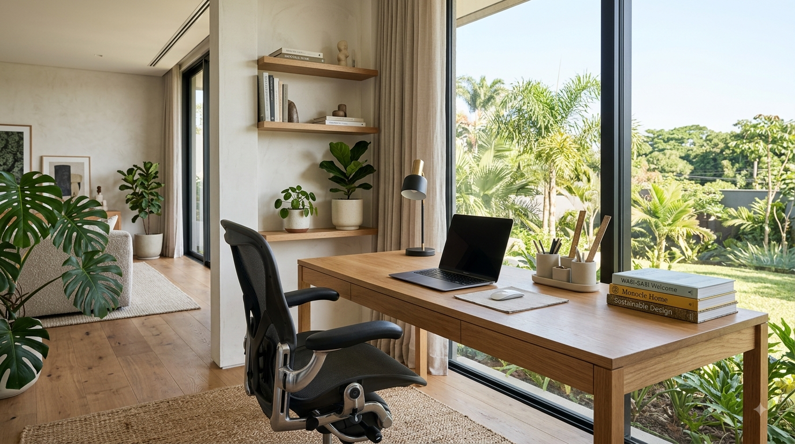

En este artículo
Coordina los colores
No es necesario utilizar exactamente los mismos colores dentro y fuera de la casa. Sin embargo, una paleta relacionada puede crear una transición visual más natural.
Puedes repetir algunos tonos presentes en los textiles interiores, los muebles exteriores o determinados elementos del jardín.
Construye una paleta que funcione en ambos espacios
Una de las formas más sencillas de crear continuidad es utilizar colores relacionados. Si el salón utiliza tonos arena, madera y verdes suaves, algunos de esos colores pueden aparecer también en cojines exteriores, macetas o textiles de la terraza. La repetición crea una conexión visual sin obligar a decorar todos los espacios de la misma manera.
Los colores deben adaptarse a la luz de cada zona. Un tono que funciona perfectamente en un interior puede verse diferente bajo el sol directo. Por eso es recomendable observar las muestras durante diferentes momentos del día antes de tomar decisiones importantes.
También puedes utilizar un color de acento para unir ambientes. No hace falta repetirlo en grandes superficies: pequeños detalles bien distribuidos pueden ser suficientes para que la transición resulte natural.
Ten en cuenta la luz del exterior
Los colores pueden parecer diferentes bajo la luz interior y bajo el sol. Por eso, cuando se eligen textiles, pinturas o accesorios para una zona de transición, conviene observarlos en las condiciones reales de uso. Esta comprobación evita que un tono elegido para combinar con el salón termine creando un contraste inesperado en la terraza.
Una estrategia sencilla consiste en elegir una base neutra y utilizar pequeños acentos de color. De esta manera es más fácil actualizar cojines, macetas o accesorios sin tener que modificar toda la decoración cuando cambian las preferencias.
Repite algunos materiales
La continuidad también puede conseguirse mediante materiales que aparezcan en ambos ambientes. Madera, fibras naturales, piedra u otros acabados pueden utilizarse de forma equilibrada.

No necesitas copiar el mismo diseño
El objetivo es crear una relación entre los espacios, no convertirlos en una copia exacta uno del otro.
Repite materiales de manera estratégica
La madera, la piedra, el metal y determinados textiles pueden aparecer tanto dentro como fuera de la vivienda. Repetir un material en cantidades moderadas ayuda a relacionar los ambientes. Por ejemplo, una mesa de madera en el comedor puede encontrar un eco visual en una pequeña pieza de madera protegida para exteriores.
En zonas exteriores es importante elegir materiales adecuados para la exposición ambiental. No todo lo que funciona dentro de casa soportará humedad, radiación solar o cambios de temperatura. La continuidad estética debe ir acompañada de una selección técnica apropiada.
El pavimento también puede contribuir a la transición cuando existe la posibilidad de utilizar materiales relacionados. Si no es posible mantener el mismo acabado, una paleta cromática semejante puede conseguir un efecto similar.
Prioriza la resistencia en el exterior
La continuidad estética no debe llevar a utilizar materiales inadecuados. Un acabado pensado para interior puede deteriorarse rápidamente cuando está expuesto a lluvia, humedad o radiación solar. Para cada pieza exterior, comprueba las recomendaciones de mantenimiento y las condiciones para las que fue diseñada.
También conviene pensar en la limpieza. Los materiales exteriores acumulan polvo y humedad con mayor facilidad, por lo que las superficies sencillas de mantener suelen funcionar mejor a largo plazo. Una decoración bonita que exige cuidados excesivos puede terminar siendo poco práctica.
Utiliza la vegetación como conexión
Las plantas pueden actuar como un elemento de transición entre la vivienda y el jardín. Algunas especies pueden colocarse cerca de puertas, ventanas o zonas de paso cuando las condiciones sean adecuadas.
La elección debe considerar la luz, la temperatura y las necesidades reales de cada planta.

Utiliza la vegetación como elemento de transición
Las plantas pueden funcionar como un puente natural entre el interior y el exterior. Algunas especies de interior pueden colocarse cerca de las puertas que conectan con una terraza o jardín, mientras que jardineras y macetas exteriores pueden continuar la misma gama de verdes o formas.
No es necesario utilizar exactamente las mismas especies. Lo más importante es mantener una relación en tamaños, colores o texturas. Una repetición excesivamente literal puede parecer artificial, mientras que una selección relacionada crea una conexión más sutil.
Ten en cuenta las necesidades reales de cada planta. La luz, la humedad y la temperatura cambian de un espacio a otro, por lo que las especies deben elegirse según sus condiciones. La estética nunca debería sustituir al cuidado adecuado.
Elige plantas según las condiciones reales
La vegetación puede reforzar muchísimo la transición, pero cada especie tiene necesidades diferentes. Antes de repetir una planta en interior y exterior, comprueba si tolera las condiciones de luz, temperatura y humedad de ambos lugares. En ocasiones será mejor utilizar especies diferentes que compartan forma o color.
Las macetas también pueden convertirse en un elemento de unión. Repetir un mismo material o una gama cromática similar ayuda a crear continuidad incluso cuando las plantas no son iguales. La elección debe equilibrar estética, tamaño y facilidad de mantenimiento.
Facilita la circulación
Una conexión visual pierde parte de su utilidad si el acceso entre los espacios resulta incómodo. Mantén despejadas las zonas de paso y evita colocar muebles donde interfieran con puertas o recorridos habituales.
- Mantén libre el acceso principal al exterior.
- Evita obstáculos innecesarios.
- Coloca los muebles respetando las zonas de circulación.
- Considera cómo se utilizará el espacio durante diferentes épocas del año.
Haz que el recorrido entre interior y exterior sea cómodo
La conexión también depende de cómo se mueve una persona entre ambos espacios. Mantén despejada la zona próxima a puertas correderas o accesos y evita colocar muebles que obliguen a realizar maniobras incómodas. Una transición clara hace que el exterior resulte más accesible y se utilice con mayor frecuencia.
La iluminación puede reforzar esa sensación durante la tarde y la noche. Una combinación de iluminación interior cálida y puntos de luz exterior bien distribuidos puede mantener la continuidad visual sin generar un exceso de brillo.

Finalmente, piensa en los elementos prácticos. Una zona para dejar zapatos, textiles resistentes o pequeños accesorios cerca del acceso puede facilitar el uso diario del jardín o terraza. La conexión será más efectiva cuando además de verse bien resulte cómoda.
Integra también los elementos prácticos
Una conexión bien diseñada debe funcionar durante todo el año. Si el acceso al exterior requiere mover constantemente muebles, guardar cojines o superar obstáculos, será menos probable que se utilice. Reserva una zona para los elementos que necesitan entrar y salir de casa y mantén el recorrido principal despejado.
Cuando existe una diferencia de nivel o un paso estrecho, conviene prestar especial atención a la seguridad. La estética debe acompañar una circulación cómoda y estable. Una transición sencilla suele resultar más agradable que una decoración elaborada que dificulta el movimiento.
Consejos finales para mantener el resultado
Antes de hacer cambios importantes, observa cómo se utiliza realmente la conexión entre la vivienda y el exterior. Si la puerta se utiliza con frecuencia, la prioridad debe ser mantener el recorrido cómodo. Si el espacio exterior se utiliza principalmente por la tarde, la iluminación y los textiles pueden tener más importancia. Si apenas se utiliza, quizá convenga revisar si existen obstáculos que lo hacen poco práctico. La conexión también puede reforzarse mediante pequeños detalles, como una planta cerca del acceso, una alfombra adecuada para la transición o un mueble exterior cuya proporción dialogue con el mobiliario interior. No es necesario transformar toda la decoración para conseguir un resultado coherente. Además, cualquier elemento exterior debe elegirse pensando en su mantenimiento. La lluvia, el polvo y el sol pueden exigir cuidados diferentes a los del interior. Una solución estética que sea sencilla de limpiar y resistente tendrá más posibilidades de mantenerse atractiva con el paso del tiempo. El objetivo final es que ambos ambientes se complementen y que el exterior se sienta como una parte natural de la vivienda, no como un espacio completamente desconectado.
Detalles que mejoran la experiencia
También es importante pensar en la relación entre estaciones. Una terraza puede utilizarse de manera diferente en verano, invierno o durante los días de lluvia. Los textiles, cojines y accesorios que permanecen fuera deben elegirse según las condiciones del lugar y guardarse cuando sea necesario. Si el acceso al exterior está cerca de una cocina o comedor, una pequeña superficie auxiliar puede facilitar comidas y reuniones sin obligar a trasladar continuamente objetos. En balcones y espacios pequeños, la continuidad puede conseguirse con macetas, colores y materiales sin necesidad de incorporar muchos muebles. La sensación de amplitud es especialmente importante en estas zonas. Mantener despejado el recorrido y utilizar piezas proporcionadas suele ser más efectivo que intentar reproducir un salón completo en el exterior. La mejor conexión será aquella que se adapte a las dimensiones reales y a la forma en que la familia utiliza la vivienda.
También puedes ajustar estos detalles según la época del año y el uso habitual de la vivienda.
La coherencia se construye con pequeños detalles repetidos y con una distribución que facilite realmente el paso entre ambos ambientes.
Preguntas frecuentes
¿Es necesario utilizar los mismos colores dentro y fuera de casa?
No. Basta con crear una relación entre las paletas. Repetir algunos tonos de forma puntual suele ser suficiente para generar continuidad sin que los ambientes parezcan idénticos.
¿Qué materiales pueden ayudar a crear continuidad?
Madera, piedra, metal y determinados textiles pueden repetirse de manera estratégica, siempre eligiendo versiones adecuadas para exteriores cuando estén expuestas a humedad o sol.
¿Por qué es importante mantener despejada la zona de acceso?
Un acceso cómodo facilita utilizar el exterior con más frecuencia y evita que muebles o accesorios interrumpan el recorrido entre ambos ambientes.
Conclusión
Conectar interior y exterior no significa realizar una gran reforma. La continuidad puede construirse mediante colores, materiales, plantas y una distribución bien pensada.
Cuando ambos espacios se relacionan de manera natural, la vivienda puede sentirse más integrada y agradable.
Conectar interior y exterior consiste en crear relaciones visuales y funcionales, no en hacer que ambos ambientes sean idénticos. Una paleta coordinada, algunos materiales repetidos, vegetación relacionada y una circulación cómoda pueden hacer que la transición resulte mucho más natural. Al mismo tiempo, cada espacio debe conservar sus necesidades específicas de mantenimiento, iluminación y resistencia. Con pequeños cambios bien elegidos, una terraza o jardín puede sentirse como una extensión real de la vivienda.